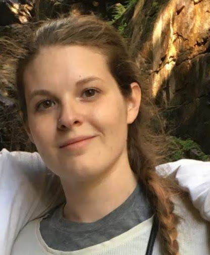

Amanda MacInnis
Stony Brook University
Key science targets achievable by a next-generation ultradeep, ultrahigh-resolution CMB survey
Measurements of the cosmic microwave background (CMB) have placed increasingly tight constraints on cosmological parameters, and measurements of CMB temperature and polarization power spectra (TT, TE, EE) by current experiments such as the Simons Observatory are expected to be sample-variance limited out to multipoles of 1000. We forecast how a next-generation ultradeep, ultrahigh-resolution CMB survey, such as CMB-HD, will improve the constraints on our cosmological model by measuring CMB temperature and polarization, along with the lensing of the CMB, on much smaller scales, out to multipoles of 20,000. However, extragalactic foregrounds significantly contaminate the CMB signal on these scales. To address this challenge, we develop a multi-frequency foreground-mitigation strategy which takes advantage of the low noise and high resolution of CMB-HD. We generate a set of ultrahigh-resolution microwave sky simulations at the CMB-HD frequencies and apply this foreground-cleaning procedure to them in order to account for the residual level of extragalactic foregrounds in both the CMB temperature and CMB lensing noise curves.
We combine mock CMB-HD delensed CMB temperature and polarization power spectra and the CMB lensing power spectrum with mock DESI BAO data to forecast constraints on the six ΛCDM parameters, the effective number of relativistic species, and the sum of the neutrino masses. After additionally marginalizing over parameters that characterize the strength of baryonic feedback and the kinetic Sunyaev–Zeldovich power spectrum, we find improvement on all cosmological parameters relative to the existing or expected constraints from current CMB surveys. In particular, we obtain a one-sigma error of 0.0154 on the effective number of relativistic species, which can rule out new light thermal particles with at least 90% confidence. The simulations and mock data used in these forecasts, along with the code used to produce them, are all publicly available.